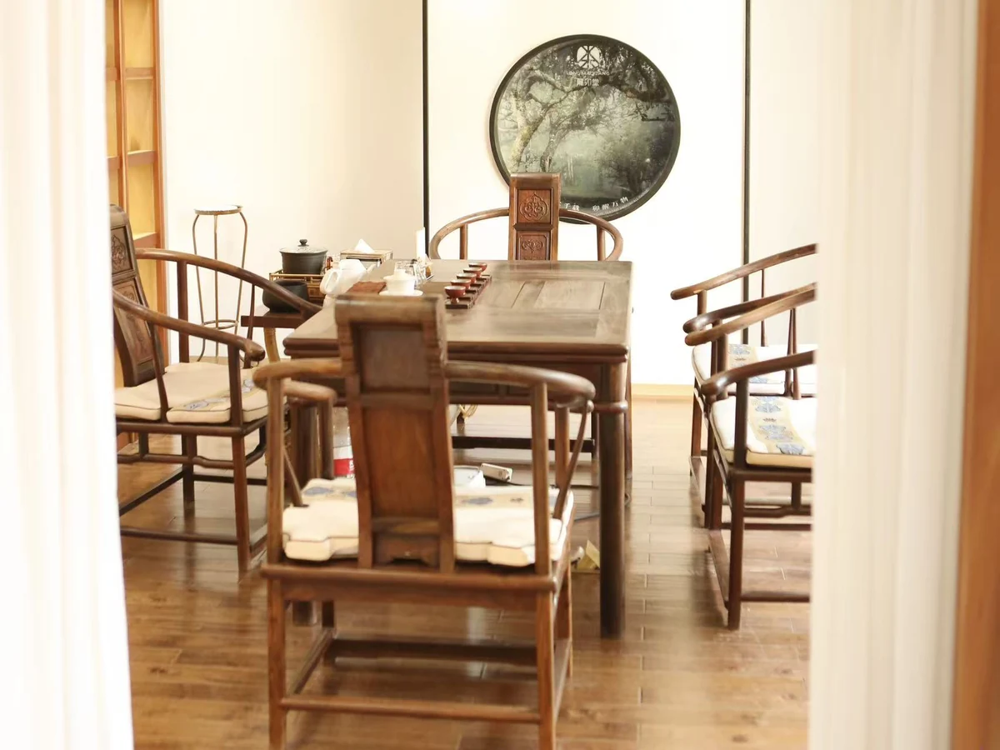

浅色长盒搭配彩绘纹样。

今天，想看哪一盏？
关于香宁
一盏普洱，一席相聚
香宁茶业有限公司专注普洱茶。茶室里，长桌上摆着茶器与茶饼。围桌而坐，便可慢慢品一盏茶。


西双版纳
版纳茶韵
雨林的深浅绿、傣式木楼的屋檐、织锦上的几何纹样，都藏着西双版纳的风情。围坐茶席，喝一盏普洱，也慢下来感受这份版纳韵味。

品茶知味
在西双版纳，留客常从一盏热茶开始。选一款合口的茶，看叶底在水里舒展，再把余下的茶妥帖收好。茶席上的讲究，都从这些小事里来。
选茶 · 从一口喜欢开始
想喝得清爽些，可以试试新一些的生普。它常带着清扬的香气和鲜明的涩感，咽下后，再留意口中有没有慢慢回甜。若偏爱醇和顺口的茶，熟普的甜润与陈香，适合坐下来慢慢喝。
挑茶时可以先买小份，生熟各试一种。趁热闻香，等茶汤温下来再尝一口；续水两三次，看看香气和滋味怎么变。山头、年份可以慢慢了解，喝完还想添杯，就是选茶的好起点。
冲泡 · 浓淡之间见分寸
一只白瓷盖碗，就能泡上一席茶。先用热水温过盖碗和茶杯，再投茶。用约 150 毫升的盖碗，可以从 5 克茶试起。熟普可用沸水冲泡；细嫩的新生普若泡得太苦涩，可让水稍凉再注入。
前几泡快些出汤，每泡尽量沥净；等茶味淡了，再略多等片刻。觉得太浓，下次少投一点，或早点出汤。一席茶从清香喝到尾水，细细尝，就能喝出同一款茶在几泡之间的变化。
存放 · 给茶一个清静处
家里存普洱，先挑地方：避光、干燥、清洁，没有异味。撬过的茶饼，用干净的原包装包好，放在离地的柜架上。生茶和熟茶分开收，远离灶台、香料和潮湿的墙角。
雨季多看一眼包装是否返潮，平时以包装上的贮存说明为准。发现茶叶发霉，就不要再喝。手边的茶隔一阵子泡一回，记下香气和茶汤的厚薄，比单看年份更能体会一款茶的变化。
联系香宁
茶品咨询 · 品饮交流 · 合作洽谈